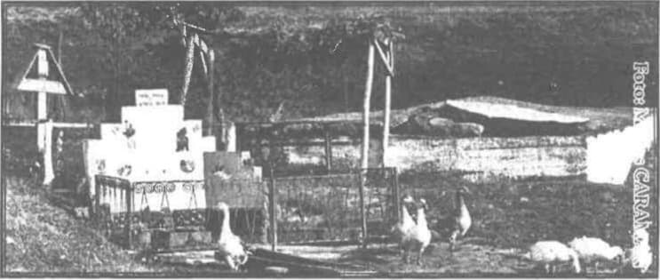
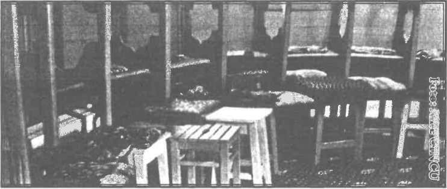
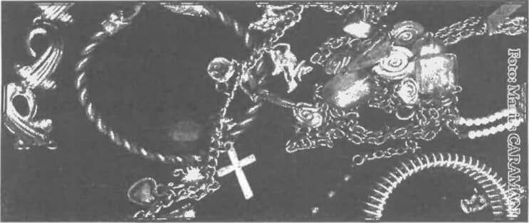

În numele Tatălui și al Fiului și al Sfântului Duh. Amin.
Prăznuim astăzi pe cuvioșii athoniți și aș începe prin a vă citi un cuvânt despre profeția pe care a avut-o Cuviosul Marcu, ucenicul Sfântului Grigorie Sinaitul legat de Schitul Prodromu.
„Această vedenie a văzut-o cuviosul Marcu, ucenicul Sfântului Grigorie Sinaitul, treaz fiind, adică, cum stau îngerii și arhanghelii împrejurul Născătoarei de Dumnezeu, slăvind-o și închinându-se ei, care avea palate de aur preafrumoase și înalte, către partea ce se zice Vigla, adică frumoasă privire. Această vedenie s-a împlinit acum la schitul nostru românesc Prodromu, pentru că aici este acest loc numit Vigla.
Și unii dintre cuvioșii părinți, vrednici de credință, ne-au spus nouă, precum și duhovnicul Antonie Grecul a auzit de la starețul lui, că de multe ori, trecând seara pe acolo, vedea lumină. Și a cunoscut și a văzut că în acel loc voiește Maica Domnului a se zidi mănăstire frumoasă, după cum se vede astăzi. Și pentru Întărirea, mângâierea și ajutorul celor ce vor locui într-însul, însăși Maica Domnului ne-a dăruit nouă, nevrednicilor, preasfințit chipul său și al Fiului său închipuit pe icoana cu dumnezeiască minune zugrăvită."1
Prăznuindu-i pe cuvioșii athoniți, este de mare importanță să înțelegeți că rostul vostru ca monahi prodromiți este de a ajunge alături de ei în Împărăția Cerurilor, ca să o lăudați pe Preasfânta Născătoare de Dumnezeu.
Mărturia pe care voi, ca monahi, trebuie s-o dați lumii de astăzi, este foarte importantă, pentru că lumea este într-o dezbinate din ce în ce mai puternică.
Părintele stareț, părintele Petroniu, scria într-o carte că oamenii vor pace, caută pace, dar nu știu să o caute cum trebuie; caută pacea lumească, fără să știe să-L cheme pe Dumnezeu în ajutorul lor și să dobândească pacea cea adevărată. Scria părintele Petroniu: „Mulțimile de pelerini, care vin an de an la Athos, nu vin să vadă obiecte artistice, antichități sau muzee, de care este plină lumea de astăzi; ci cu totul altceva. Omenirea de astăzi, învrăjbită, izolată, tânjește după comuniunea și căldura dragostei și vine s-o vadă la Athos.”2 Numai că duhul acesta lumesc încet, încet începe să-și facă loc chiar și în Sfântul Munte Athos, prin diversele tentative de modernizare.
Părintele Benedict Ghiuș, vorbind despre criza monahismului, spunea următoarele: „Toată viața călugărească este ascultare și rugăciune, rugăciune și ascultare. Epocile de criză ale monahismului sunt o problemă a rugăciunii și a ascultării. Prin urmare, restaurarea monahismului stă în întoarcerea la temeiul acestor principii ale vieții monahale."3
Numai că, o dată cu împuținarea ascultării, o dată cu împuținarea rugăciunii, asistăm și la o împuținare a nevoinței. Părintele Macarie de la Simonos Petras spunea într-un articol că unul din motivele pentru care monahismul athonit s-a aflat în criză a fost că, prin anii 1921-1922, au venit în Sfântul Munte foarte mulți refugiați greci din Asia Mică, în urma expulzărilor făcute de turci.
Și deși au intrat mulți în mănăstire, mulți au intrat pentru motivații sociologice — zice părintele Macarie. Nu au intrat în mănăstire din motive duhovnicești. Or, lucrul acesta și-a pus amprenta asupra vieții monahale din Sfântul Munte Athos. Pentru că, dacă unul intră în mănăstire fără să fie cu adevărat chemat de Hristos și fără să vrea să se dăruiască în întregime lui Hristos, viața lui de dezordine lăuntrică își va pune amprenta asupra celorlalți din obște.
Spunea ieroschimonahul Daniil Sandu Tudor — un părinte care a murit martir, mucenic în închisoarea din Aiud — și amintesc de el pentru că astăzi Biserica din România prăznuiește Duminica Sfinților Români, atât a celor canonizați cât și a celor care așteaptă canonizarea — ei bine, acest părinte sporit în viața duhovnicească spunea așa: „Neorânduiala monahului este mare nelegiuire față de sufletul său. La Voroneț, în gura balaurului se văd și culioane călugărești.”4 Și nu numai la Voroneț, în mai multe fresce în care este reprezentat iadul.
Tot părintele Petroniu vorbea foarte frumos despre una din cauzele acestei neorânduieli în mănăstiri, și spune așa: „În urma schimbărilor ivite după anul 1989, doritorii de viață monahicească, nemaifiind împiedicați să intre (în mănăstiri — n.n.), au găsit mănăstirile fără părinți duhovnicești, fără bătrâni îmbunătățiți, care să-i povățuiască. De aici, refrenul pe care-l auziți peste tot în mănăstirile noastre: «Este nevoie de duhovnici, este nevoie de stareți, este nevoie de părinți duhovnicești.»”5.
O să-mi permit să citez mai multe pasaje din cărțile Părintelui stareț Petroniu Tănase, nu pentru a-l linguși, ci pur și simplu pentru că un mirean nu se pricepe să trateze neorânduiala vieții călugărești și, abordând acest subiect în discuțiile cu părintele stareț, am căutat să văd cum le tratează în cărțile lui și am găsit răspunsuri foarte potrivite.
La întrebarea: „De ce nu mai sunt stareți astăzi?”, un răspuns foarte potrivit este: „Pentru că nimeni nu mai vrea să fie ucenic”. Toți vor să ajungă direct mari stele duhovnicești, fără să treacă prin încercările ascultării, fără să treacă prin lupta duhovnicească cu ei înșiși, cu patimile și cu puterile diavolești, și vor să devină călăuzitori ai altora. Părintele Petroniu arăta că una dintre cauze este și scurtimea uceniciei pentru tunderea în monahism.
Marile prefaceri prin care a trecut lumea au lăsat urme adânci și în viața mănăstirească. Durata uceniciei monahale s-a scurtat mult. Acum, fratele, după un an, doi, este făcut monah, uneori chiar schivnic, ba și diacon și preot și duhovnic. Ascultarea, făgăduința de temelie a vieții călugărești, și-a pierdut valoarea. Lucru foarte trist, pentru că nu poți să-L dobândești pe Hristos, câtă vreme nu te-ai pregătit lăuntric prin nevoință și rugăciune. De asta au apărut și oameni care, trăind în obște, duc viață pătimașă.
Părintele ieroschimonah Sandu Tudor vorbea, la un moment dat, despre mânia monahului, și întreba: „De unde iuțimea monahului? De ce, adică, chiar unii monahi râvnitori nu se pot stăpâni și repede se aprind la mânie? Înfrânarea și nevoințele călugărești, dacă se fac numai pe dinafară, se aseamănă cu vasul cu apă pus la fiert: când aburii din vas se înmulțesc, capacul sare și aburii ies afară. Asceza exterioară, numai trupească, ne face sensibili, explozibili; nu ne eliberează lăuntric, nu ne duce la nepătimire. De aceea este necesară o asceză pnevmatică, o lucrare lăuntrică. Să ne schimbăm și să ne prefacem dinăuntru în afară, și nu invers, cum facem de obicei. Lucrarea pe dinafară este pruncească și, numai cu ea, rămânem în mintea copiilor toată viața. Repet: numai cu lucrarea pe dinafară, rămânem în mintea copiilor toată viața.”6
Îmi cer iertare că vă citesc astfel de cuvinte duhovnicești, eu fiind mirean și fiind pătimaș, dar cred că e de mare folos să purtăm în minte învățăturile acestor mari părinți duhovnicești. Dacă vor rămâne monahii la trăirea din afară, încet, încet vor ajunge la o schizofrenie și se vor asemăna fariseilor fățarnici, pentru că nu-L vor dobândi pe Hristos.
Într-adevăr, așa cum învață întreaga tradiție a Sfinților Părinți, schimbarea trebuie să vină dinlăuntru înafară, pentru că, dacă va rămâne o schimbare superficială, poți îmbătrâni în patimile tinereții.
A fost surprinzător pentru mine să observ cu câtă atenție părintele stareț a atacat modernismul din unele mănăstiri, în care televizorul și radioul sunt la loc de cinste. Și am să vă spun o întâmplare pe care mi-a relatat-o un părinte duhovnic: a fost trimis din mănăstirea de călugări la o mănăstire de maici, ca duhovnic, și în ziua în care a venit, o maică i-a spus: „Vai, părinte, Maica Domnului v-a trimis la noi!” Și părintele, la primul cuvânt pe care l-a ținut, le-a zis: „Ei, lăsați, lăsați! Parcă văd că peste câteva zile n-o să mai fiți mulțumire și o să vreți să plec!”
Și, văzând părintele duhovnic că unele maici aveau televizoare în chilii, la spovedanie, le-a dat canon să renunțe la televizor. Și, după câteva zile, maicile s-au strâns și l-au dat afară din mănăstire. Și exact maica aceea care mai devreme îi spusese: „Părinte, Maica Domnului v-a adus la noi!”, exact aceeași maică i-a zis: „Părinte, Maica Domnului te-a gonit de la noi!” — de parcă Maica Domnului ar putea să gonească un părinte care vrea să pună rânduială duhovnicească într-o mănăstire.
Și zice părintele Petroniu: „Binefacerile civilizației moderne au intrat din plin în viața mănăstirească. Femei și monahii, bucătărese pe la stareți și bucătăria obștii, deoarece, cum spunea cineva, monahii nu știu să citească bine. Radioul și televizorul stau la loc de cinste, până și la schituri, uneori și în chilii monahicești, și-n obștile monahale, unde totul este de obște.
Au apărut monahi care posedă și folosesc personal automobil propriu. Am mai observat că monahii iubitori de turism la locurile sfinte nu prea se împacă cu rânduielile călugărești, cu slujbele lungi, cu munca, doresc să fie mai liberi. Și ca îndreptățire, auzi argumentul: lumea s-a civilizat, s-a modernizat, suntem în era științei, se cuvine ca și monahismul să fie în pas cu vremea. Practicile de altădată s-au învechit, nu mai sunt valabile în vremea noastră. Toate, acest fel de înnoiri, sunt cu totul străine de viața monahicească”7 — zice părintele stareț în articolul Despre ascultarea monahicească din volumul Chemarea Sfintei Ortodoxii.
Ba, mai mult, atrage atenția asupra acelor monahi care, în loc să-și vadă de ascultare, caută să peregrineze din mănăstire în mănăstire, și nu pentru a dobândi folos duhovnicesc, nu pentru a-și spori nevoințele — pentru că în istoria bisericii întâlnim părinți cu viață sfântă care, pentru anumite perioade, au călătorit de la o mănăstire la alta pentru a agonisi folos duhovnicesc — ci astfel de monahi practică acest turism spiritual doar pentru a nu duce crucea cea grea a călugăriei.
Și zice părintele Petroniu: „Moda turismului a intrat și în mănăstire. Frați și monahi tineri pleacă în turism monahal la locurile sfinte — Ierusalim, Sinai, Athos, Grecia, Insulele Egee etc. — fără aprobare și binecuvântare. Nedumerit, m-am întrebat; de unde au bani? Pentru că trebuiesc mulți bani pentru acestea, iar monahul a făgăduit să urmeze sărăciei lui Hristos și ascultării Lui."8
Și, într-adevăr, sunt monahi care, pentru a face rost de bani, țin legături cât mai strânse cu mirenii, țin prietenii strânse cu mirenii, nu pentru a-i urca pe aceștia spre Hristos, ci pentru a atrage anumite avantaje materiale.
Părintele Petroniu îmi spunea zilele trecute cu tristețe cât de tare și-a pus amprenta modernitatea chiar pe Sfântul Munte Athos. Părintele Macarie de la Mănăstirea Simonos Petras spunea că, în anul 1958, când s-au sărbătorit o mie de ani de la sosirea Sfântului Atanasie Athonitul și întemeierea mănăstirii Marea Lavră, „Muntele Athos trecea printr-un asemenea declin, încât se asista, în fapt, la îngropăciunea Muntelui Athos, la un parastas, nu la o aniversare!” Grele cuvinte! Și zice: „Existau deja planuri (și fiți atenți: încă din 1958, deci!) existau deja planuri făcute de responsabilii politici de a transforma mănăstirile în hoteluri, de a face șosele asfaltate la standarde europene, de a transforma Muntele Athos într-un soi de muzeu bizantin. Toți monahii urmau a fi concentrați în una sau două mănăstiri, restul mănăstirilor urmând a fi transformate în muzee”.
Numai că Maica Domnului a rânduit apărarea Sfântului Munte Athos și, datorită monahilor care au venit și din România, și din Serbia, și din Rusia, au crescut obștile și nu s-au putut împlini planurile celor care au vrut distrugerea Sfântului Munte Athos.
Deși, cu câțiva ani în urmă, precum știți, Parlamentul European a aprobat intrarea femeilor în Sfântul Munte Athos. Numai că statul grec s-a opus, a invocat o clauză de la aderarea Greciei în Uniunea Europeană și nu au reușit femeile să intre. Dar parlamentarii europeni au cerut aceasta și au cerut, implicit, batjocorirea Sfântului Munte Athos, în care Maica Domnului nu a vrut să intre picior de femeie.
Și-mi spunea părintele Petroniu cu tristețe: „Rău au făcut ierarhii care au propovăduit avantajele integrării României în Uniunea Europeană, fără să pomenească de aspectul spiritual al lucrurilor. Pentru că degeaba vom avea avantaje materiale dacă credința noastră va fi pusă în primejdie, dacă va fi distrus Sfântul Munte Athos prin intrarea femeilor” - și, aș continua eu, dacă ni se va impune să-i educăm pe copii cu o deschidere foarte largă față de homosexuali și chiar să acceptăm propaganda homosexuală în școli, așa cum a impus Uniunea Europeană statului polonez și așa cum va impune și României, dacă România nu va ști să țină nestinsă flacăra dreptei credințe și dacă nu va apăra valorile morale.
Cum să reziste Athosul la modernizare? Trebuie să vă dați seama că distrugerea Athosului nu va veni dinafară. Distrugerea Athosului nu poate veni decât dinlăuntru. Îmi spunea părintele Petroniu cu tristețe că un cunoscut teolog, un părinte athonit care scrisese un articol, în care se pronunța împotriva construirii șoselelor în Athos și a mersului cu mașina prin Athos, nu după multă vreme a fost văzut el însuși la volanul unei mașini prin Sfântul Munte… Or, de atitudinea voastră depinde viitorul Athosului. Dacă voi veți ști să rezistați modernizării, dacă voi veți ști să vă apărați viața de nevoință, atunci Hristos va fi cu voi și Maica Domnului nu va părăsi acest munte. E mare, mare nevoie să țineți ascultarea de părinții duhovnici.
Spunea Sfântul Ignatie Briancianinov că oamenii obișnuiți nu pot înțelege marea taină a ascultării și ar fi gata chiar să arunce cu pietre în cel care ține această cale a ascultării. Or, voi să încercați să vă modelați nu după duhul acesta, ci să rămâneți în ascultare de părinți și după duhul tradiției.
Să observăm însă că, o dată cu această modernizare la nivel social, asistăm și la o modernizare în plan dogmatic. Părintele Petroniu relatează o declarație interesantă, ciudată, din articolul Fuga de lume a monahului, din volumul Chemarea Sfintei Ortodoxii. „Un ierarh ortodox, membru activ în mișcarea ecumenică, zicea că: «a sosit timpul ca și monahismul să-și aducă contribuția sa în mișcarea ecumenică, pentru unirea Bisericilor». Așa-zisa fugă de lume a monahului, pentru mulți este neînțeleasă. Pare ca o abatere de la adevărata cale a vieții creștine”9. Și concluziona părintele stareț că o astfel de înțelegere este cu totul potrivnică vieții monahicești, așa cum a spus-o de demult marele Antonie, Sfântul Antonie. „Precum peștii, zăbovind pe uscat, mor, așa și monahii, zăbovind afară din chilie, petrecând cu mirenii, se slăbănogesc”10.
Deci, pe de o parte, monahul nu trebuie să se implice în problemele politice, chiar dacă unii ierarhi se lasă angrenați în problematica politică și pentru aceasta impun o anumită direcție, monahul trebuie să rămână pe calea Sfinților Părinți. Însă, atunci când este primejduită dreapta credință, monahul nu trebuie să tacă. Spuneau Sfinții Părinți că prin tăcere Îl trădăm pe Dumnezeu. Iar Sfântul Grigorie Palama vorbește despre trei feluri de ateism: ateismul necredincioșilor, pentru că nu cred în Dumnezeu; ateismul ereticilor, pentru că ei, închinându-se la un Dumnezeu greșit, de fapt se închină la idoli și ereticii nu-L cunosc pe Dumnezeul cel adevărat; și ateismul ortodocșilor, spune Sfântul Grigorie Palama, care tac la vreme de prigoană. Repet, Sfântul Grigorie Palama considera că acei creștini care la vreme de prigoană tac sunt atei. Or, cu atât mai mult astăzi, când se vorbește atât de mult despre unirea bisericilor, monahii nu trebuie să tacă, ci trebuie să țină aprinsă candela dreptei credințe, așa cum a făcut-o cuviosul făcător de minuni, Iustin Popovici, care a luptat împotriva ereziei ecumeniste, care a luptat împotriva unirii bisericilor, chiar dacă a fost singur. Sinodul Serbiei era deschis față de ecumenism, de partea cealaltă, lupta părintele Iustin Popovici, cu Hristos de partea lui. Și cine a biruit? A biruit Hristos, prin părintele Iustin Popovici, pentru că ucenici ai cuviosului Iustin au ajuns episcopi în Serbia și au ajutat la îndepărtarea Serbiei de direcția anti-tradiționalistă în care mergea. Și minunile pe care le-a făcut părintele Iustin Popovici sunt o pecete a teologiei sale, a teologiei patristice. Și m-am bucurat să aud că și părintele Petroniu Tănase consideră că cea mai bună carte în această problemă este cartea Părintelui Iustin Popovici, Biserica ortodoxă și ecumenismul. Este o carte pe care ar trebui și monahii să-și facă timp să o cerceteze, pentru a înțelege vremurile în care trăim. Iar părintele stareț Iustin Pârvu, unul din stâlpii Ortodoxiei românești, spunea așa: „Dacă nu mărturisim adevărul și Ortodoxia după învățătura cuviosului Părinte Iustin Popovici, nu ne mântuim.” Adică, dacă vom mărturisi că toți ereticii fac parte din Biserica lui Hristos, de fapt L-am pierdut pe Hristos.

Se spune astăzi că monahii trebuie să aibă dragoste și să-i iubească pe eretici. Ca și cum Sfinții Părinți nu i-ar fi iubit pe eretici! Ba da, Sfinții Părinți au fost oamenii care i-au iubit cel mai mult pe eretici, pentru că au fost gata să moară din dragoste pentru ei. Și-au dat chiar viața pentru apărarea dreptei credințe, și pentru întoarcerea ereticilor la Ortodoxie. Pentru că dacă iubești un om care merge spre prăpastie, nu îl lași spre prăpastie. Dacă-l iubești, te duci, îi întinzi mâna și-i spui: „Frate, vino la drumul cel bun! Vino la lumină! Ferește-te de cădere, ferește-te de rătăcire!” Aceasta este mărturia pe care trebuie s-o dea monahismul de astăzi.
Să observăm că există, în anumite mănăstiri, compromisuri care se fac din motive financiare. Și spunea părintele Petroniu cu tristețe că rău fac marile mănăstiri care iau bani de la Uniunea Europeană și care-și pun tăblițe cu sumele pe care le iau de la Uniunea Europeană, pentru că în momentul în care unei femei i se opresc bani, i se oprește impozitul pe salariu, și din acești bani o parte ajunge în Sfântul Munte Athos, femeia devine implicit ctitoriță a Sfântului Munte Athos, dar nu o ctitoriță a mănăstirilor binecuvântată, pentru că de-a lungul istoriei au fost atâtea și atâtea femei cu viață sfântă, care au trimis bani la Sfântul Munte Athos. Nu, femeia modernă devine o ctitoriță nebinecuvântată, pentru că, după ce i se oprește impozitul și vine o parte din bani în Athos, femeia modernă vrea să intre în Athos, fără să-i fie teamă de osânda Maicii Domnului. Și trebuie să înțelegem că prin primirea unor astfel de bani, ne facem părtași la înșelarea femeilor care vor vrea să intre în Sfântul Munte Athos.
A venit în România un părinte stareț din Grecia, și le-a zis românilor: „Să vă ferească Dumnezeu să intrați în Uniunea Europeană!” Și le-a mai zis: „Încercați să nu luați bani de la acest for lumesc, care încearcă îndepărtarea lumii de Hristos!” Și un părinte român l-a întrebat: „Iertați-mă, cuvioase părinte stareț, dar românii, dacă ziceți că nu e bine să ia bani de la Uniunea Europeană, mănăstirile grecești de ce iau?” Adică trebuie nu doar să-i învățăm pe ceilalți cum e bine să trăiască, e bine mai întâi să fim noi înșine exemplu.
Ca să nu ne apese osânda la care s-a făcut astăzi referire în citirea Apostolului, de la Romani, în care zice așa: „Câți fără lege au păcătuit, fără lege vor și pieri; iar câți au păcătuit în lege, prin lege vor fi judecați. Fiindcă nu cei ce aud legea sunt drepți la Dumnezeu, ci cei ce împlinesc legea vor fi îndreptați.” Adică degeaba auzim cum trebuie să ne purtăm, degeaba auzim ce mărturie trebuie să dăm, dacă una auzim și alta facem, atunci nu vom ajunge la mântuire.
Părintele Petroniu arată, în cartea Icoane smerite din Sfânta Ortodoxie Românească, un exemplu de ieșire din impasul material. La mănăstirea la care era părintele Dometie, la Râmeț, pentru plata lucrătorilor care reparau clădirile mănăstirii, era nevoie de o sumă mare de bani. „Ce facem, prea-cuvioase?”, se tânguia maica stareță. „Nu fi necredincioasă”, îi zise părintele Dometie — „Maica Domnului, care ne-a ajutat de atâtea ori, nu ne va lăsa nici acum.” A doua zi, iar l-a întrebat maica stareță: „Ce facem, prea-cuvioase? Azi trebuie să plătim lucrătorii.” „Mergi la Maica Domnului, în biserică — îi zise părintele Dometie, plecând — roagă-te ei cu credință și nu ne va lăsa!” și când s-a întors părintele, a întrebat-o: „Te-ai închinat la Maica Domnului?” Și stareța a zis: „M-am închinat, dar rugăciunea mea este slabă și nu s-a întâmplat nimic” Și au venit cu o mașină câțiva pelerini și o femeie din București i-a spus așa părintelui: „Am avut mari greutăți în familie. M-am rugat lui Dumnezeu cum am putut, ca să-mi ajute, făgăduind să dau o sumă de bani unei biserici, dacă voi scăpa din necaz. Dumnezeu a fost bun și m-a ajutat, și lucrurile s-au aranjat bine. Mă gândeam ca suma făgăduită să o dau mănăstirii Cernica, din preajma Bucureștilor. Noaptea, însă, mi s-a arătat în vis o doamnă frumos îmbrăcată, și mi-a zis: «Nu la Cernica, ci la Râmeț să dai banii, că acolo au nevoie de ei.» Nu auzisem de Râmeț până atunci, — zice femeia — dar m-am interesat unde sunt Râmeții și am venit, să-mi împlinesc făgăduința.” A scos apoi un plic și i l-a dat părintelui.
Există două moduri de a dobândi banii necesari pentru repararea chiliilor și a mănăstirilor: ori îți pui nădejdea în Dumnezeu și nu faci nici un compromis, și Dumnezeu îți trimite banii în chip minunat; ori faci compromisuri pentru a obține bani, după vorba ceea, că te faci frate cu dracul până treci puntea și de fapt, până la urmă, nu mai reușești să treci puntea și se alege praful de toate socotelile tale.
Părintele Petroniu atrăgea atenția asupra urmărilor pe care le-a lăsat comunismul în viața monahală. Zice așa: „Stăpânirea atee de tristă amintire, declarând război lui Dumnezeu și Bisericii Lui, a avut ca țintă principală monahismul: i-a confiscat bunurile materiale, i-a golit mănăstirile de monahi, arestându-i și izgonindu-i din mănăstiri și împiedicând pe doritorii de viață duhovnicească să intre în mănăstire. Ba mai mult, a căutat să discrediteze monahismul în fața credincioșilor, care totdeauna au avut evlavie față de cinul monahal, stricând tradiționalele rânduieli mănăstirești. A desființat slujbele de noapte din mănăstiri, a introdus mâncarea de carne în regulamentul alimentar, a introdus femei la stărețiile și bucătăriile mănăstirilor de bărbați șa.m.d.”
Și comunismul a încercat să le impună oamenilor și monahilor frică față de puterea lumească, a încercat să-i convingă să accepte compromisul și unii l-au acceptat și, prin aceasta, s-au îndepărtat de Dumnezeu. Trebuie ca monahii să aibă curajul de a sta tari în fața primejdiilor, și să apere dreapta credință oricât ar fi de greu.
Părintele Calciu Dumitreasa, un mărturisitor al secolului XX, a stat cu putere împotriva fiarei comuniste, chiar dacă prin aceasta familia sa a fost greu încercată. Și le spunea, în vremea prigoanei comuniste, studenților, seminariștilor, teologilor niște cuvinte care vă pot folosi și pe voi, cei care mergeți pe calea monahală, chiar dacă sunt adresate celor din lume.
Zicea părintele Calciu Dumitreasa: „Cine are ca îndreptar de conștiință pe «Eu am copii de crescut», iar ca justificare morală pe «Rectorul m-a pus să iau declarații» [securiste, adică!] — acela are, în loc de suflet, un mecanism teleghidat,” — zicea părintele. Fiți voi secerătorii cei harnici. Uitați de instinctele voastre, supra-incitate de către unii din dascălii voștri, al căror principiu este: «Am mamă, am tată, am fii, am fiice, am salariu prea mare ca să accept sacrificiul și suferința pentru Hristos și pentru Biserica Lui.» Dar, lepădându-ne de cruce, ne lepădăm de fapt de Hristos.
În acele vremuri de prigoană, mulți părinți monahi au făcut închisoare, iar părintele Sofian Boghiu, de la Antim, dădea următoarea mărturie: „Dacă pot zice așa, mie mi-a plăcut în închisoare. — Auziți! — Era bine acolo, mult mai bine decât aici, în așa-zisa noastră libertate. Te puteai concentra. Nimic nu te distrăgea de la Dumnezeu. Pe când afară, câte probleme!” — zicea părintele Sofian, care a fost condamnat la 16 ani de muncă silnică, arătând că de fapt nu chinurile torționarilor, nu bătăile pe care le luau, nu foamea, nu setea i-a rupt de Hristos. Le-au biruit, au biruit toate aceste încercări prin harul lui Hristos. Monahii sunt cu adevărat liberi și sunt liberi și de obligațiile sociale, nu au mame, nu au soții, nu au copii să-i crească; monahii, în clipa intrării în mănăstire, când au depus voturile monahale, s-au dăruit în întregime lui Hristos, și-au lăsat familia în grija lui Dumnezeu, Ca monahi, sunteți cu adevărat liberi să vă jertfiți pentru Hristos. Oricât de puternică ar fi tendința planului politic sau chiar a unor ierarhi de a vă îndepărta de duhul lui Hristos.
Părintele Petroniu pomenește o situație de la alegerea ca episcop a Părintelui Benedict Ghiuș, un părinte din Rugul Aprins, mare practicant al Rugăciunii lui Iisus. Și zice despre el; „O astfel de prezență nu putea rămâne neobservată. Credincioșii Antimului, lumea intelectuală din București, și mai ales tineretul universitar căutau să-l cunoască, să-i ceară sfat duhovnicesc.”11 Dar, într-o vreme în care stăpânirea comunistă era la putere, persoana Părintelui Benedict apărea ca un corp străin, ca o piatră de poticnire. Nu era pe plac mai marilor vremii, politica lui find politica Sfintei Biserici.” Interesantă observația Părintelui Petroniu, că cei care plac mai marilor vremii se îndepărtează de politica Sfintei Biserici.
„Putea să fie profesor de teologie emerit. Și nu a fost. Putea să fie episcop sau mitropolit, Dar nu a fost. De ce? Pentru că n-a făcut pe plac puterii politice.”12 Și auziți o întâmplare descrisă de părintele Petroniu: „Într-o după amiază, ne aflam împreună în cancelaria Sfântului Sinod de la Antim, când un automobil grăbit a venit și l-a luat pe părintele Benedict și l-a dus la Patriarhie, la Camera Deputaților, unde fusese ales cu majoritate de voturi Episcop al Hotinului. A mulțumit alegătorilor, care îl aclamau neîntrerupt, pentru ca, a doua zi, adunarea electivă să rămână perplexă, aflând de demisia Părintelui Benedict, impusă de guvern."13
Adică, părintele Benedict Ghiuș a fost ales de Sinod episcop, dar puterea lumească l-a respins. Și așa i-a respins pe mulți de-a lungul istoriei, înțelegând că, dacă vor ajunge în posturi de ierarhi, vor avea influență mult mai mare asupra credincioșilor și-i vor putea învăța să se ferească de ispitele care vin de la puterea politică.

Și continuă părintele Petroniu: „Nici ca vicar părintele Benedict nu a făcut carieră. O astfel de persoană nu putea sta și activa în capitală. A fost trimis profesor la seminarul monahal de la Mănăstirea Neamț.”14 A fost exilat, altfel spus, așa cum a fost exilat și părintele Iustin Popovici la Mănăstirea Celie, pentru că Patriarhul Serbiei i-a atras atenția că sunt persoane în Sinod — în Sinodul Bisericii Sârbe — care sunt deranjate de poziția tradiționalistă a Părintelui Iustin; și l-a rugat să se retragă la Mănăstirea Celie.
M-a impresionat durerea Părintelui Petroniu legată de cazul Tanacu, din România, și spunea cu tristețe că îi părea rău că nu au sărit preoții și ierarhii în apărarea Părintelui Daniel Corogeanu și că s-a creat un precedent. Și zicea părintele Petroniu că e de așteptat ca mai încolo să ajungă alt preot în închisoare și altul și altul, pentru că puterea asta lumească se luptă din răsputeri să batjocorească credința creștină. Și zicea părintele Petroniu că dacă nu au sărit preoții și ierarhii să-l apere pe părintele Daniel, prin aceasta au lăsat loc liber pentru ca dușmanii lui Hristos să-și facă lucrarea. Și spunea că e de așteptat ca în vremurile care vor urma, pecetea aceasta a dușmanilor lui Hristos să fie pusă din ce în ce mai tare.
Părintele Petroniu face referire la o întâmplare tristă când un angajat de la Patriarhie, lepădându-se de Hristos, a vrut să-l pună pe Patriarhul Nicodim să semneze decretul de pensionare a episcopilor vicari — din articolul Întâmplări din vremea Patriarhului Nicodim. Ministerul Cultelor întocmise un proiect de lege pentru pensionarea arhiereilor vicari. Însă era nevoie de avizul regelui, și regele nu făcea nimic fără să se consulte în prealabil cu Patriarhul. Dar în cazul proiectului pentru pensionarea arhiereilor vicari, avizul Patriarhului a fost negativ. Proiectul s-a împotmolit la Palat. Și vă citesc întâmplarea: „Într-o zi, se prezentă la Patriarh părintele I. Vască, secretar general la Ministerul Cultelor, pentru rezolvarea unor probleme de interes comun. A intrat în cabinetul patriarhal și, nu după mult, ușa de la cabinet se deschide cu putere, părintele Vască, cu servieta și pălăria în mână, iese în fugă și se îndreaptă spre ieșire. Iar Patriarhul striga în urma lui. Mă vede - eu mă găseam pe holul de la intrate, zice părintele Petroniu — și îmi face semn: «Ia vino încoace! Ia și citește!» Pe biroul Patriarhului se afla o coală de hârtie, scrisă la mașina ministerului, cu litere mari și cursive, adresată regelui, ca din partea Patriarhului, al cărei cuprins, în rezumat, era următorul: «Sire, în urma consultărilor avute cu Sfântul Sinod, am ajuns la concluzia că proiectul de decret privind pensionarea arhiereilor vicari poate fi aprobat, deci i se poate da aviz favorabil spre a trece la parlament pentru votare. Semnat: Patriarhul României.» Care era tâlcul hârtiei? Patriarhul Nicodim, contând pe cinstea colaboratorilor săi, nu citea totdeauna textul hârtiilor care i se aduceau spre semnare. «Ce este aici?» - întreba el. I se spunea pe scurt conținutul și semna. Or, de data aceasta, Patriarhul, luminat de Dumnezeu, bineînțeles, a fost prudent și a citit personal adresa ce i se prezenta spre semnate. Atunci, părintele Vască, văzându-se descoperit, a luat-o la fugă și Patriarhul striga în urma lui: «Oare sunt eu păpușa, marioneta lui, să mă mintă ca un nerușinat?»"15
Am făcut referire la acest caz trist pentru că, uneori, în administrație, sunt oameni care, preocupându-se prea mult cu problemele lumești, uită să slujească cum trebuie lui Hristos. Dar părintele Patriarh a știut să păzească, la momentul respectiv, biserica de tentativa de pensionare a arhiereilor vicari.
Ce e foarte trist e că, așa cum părintele Vască reușise să ajungă în funcția respectivă, așa cum Iuda a ajuns între cei doisprezece apostoli, așa și în zilele noastre există, din păcate, urmași ai lui Iuda, care seamănă dezbinare în Biserică și care seamănă dezbinare chiar în mănăstiri. Pentru că vremea pe care o trăim este o vreme, din păcate, a dezbinării.
E foarte greu să taci când vezi că se întâmplă lucruri potrivnice Evangheliei lui Hristos. Sfântul Ambrozie spunea așa: „Există vorbire în deșert, dar există și tăcere în deșert.” Altfel spus, sunt momente în care trebuie dată mărturia cea bună.
Când părintele Dumitru Stăniloae a ieșit din închisoare, i-a dat următorul sfat Părintelui Petroniu: „Viața să-ți fie hotărâtă, fără compromisuri și confuzii, limpede. Crezul tău să-ți fie viu. Viață, nu teorie. Ești gata să mori pentru Hristos? Nu pierde din vedere ținta spre care alergi. Să nu ne înecăm în marea vieții.”16 Și această întrebare pe care părintele Stăniloae i-a adresat-o Părintelui Petroniu, de fapt, se adresează tuturor monahilor: „Ești gata să mori pentru Hristos?” Pentru că vremea în care trăim e așa cum arăta părintele Efrem Katunakiotul, este o vreme a muceniciei. Este o vreme în care suntem chemați să mărturisim dreapta credință. De altfel, viața monahală este prin excelență o viață de mucenicie. Părintele Daniil Sandu Tudor spunea următoarele: „Monahul este mucenicul de toate zilele. Trebuie să trăiești zilnic această mucenicie în toate lucrurile mărunte ale vieții. Să învățăm sfințenia asprimii, sfânta dulceață a ocării, sfințenia ascultării, tăierea voii în tot ce facem, cu smerenie și discreție.”17
Când Patriarhul Iustinian a venit la Sfântul Munte Athos, a scris următorul text în condica oficială a Schitului Prodromu: „Starea duhovnicească, din cauza dezbinărilor stiliste din sobor, lasă foarte mult de dorit”18 fiind întristat de dezbinarea care avea loc în acea vreme, în 1963, în Schitul Prodromu. Tristețea Preafericitului Părinte Patriarh era întemeiată, pentru că schiturile, obștile monahale trebuie să fie unite în cugetul lui Hristos.
Spunea Sfântul Teodor Studitul ucenicilor săi: „Iubiți-mă, fiilor, așa cum L-au iubit Apostolii pe Hristos, căci și eu așa vă iubesc pe voi, cum i-a iubit Hristos pe Apostoli”. Și, cu adevărat, viața duhovnicească din obștea sa a rămas ca reper pentru monahismul ortodox. Ba mai mult, mulți dintre ucenicii Sfântului Teodor Studitul au primit mucenicia pentru apărarea icoanelor. Pentru că Sfântul Teodor Studitul a învățat că monahul, atunci când e primejduită dreapta credință, nu trebuie să tacă. Și o lăuda pe o stareță care fusese dată afară din stăreție și care fusese la închisoare, pentru că avea curajul de a apăra icoana și de a respinge împărtășania ereticilor. Pentru că în acea vreme de prigoană iconoclastă, unii ortodocși și chiar monahi și chiar ierarhi, mai slabi în credință, se împărtășeau din împărtășania ereticilor. Or, Sfântul Teodor Studitul a învățat că, așa cum în potirul binecuvântării, de la Biserica Ortodoxă, credincioșii sunt uniți cu Hristos, așa în potirul eretic sunt uniți cu diavolul.
Sunt monahi care întreabă: „Și cine sunt ereticii vremurilor noastre?” Pentru că există din ce în ce mai multă confuzie. Sunt unii care cred că eretici sunt numai cei care neagă dumnezeirea lui Hristos, că Hristos este Dumnezeu, Nu-i adevărat! Sfintele Sinoade Ecumenice ne arată cât de multe și felurite sunt cetele ereticilor. Și Sinoadele care au continuat după al VIl-lea Sinod Ecumenic au anatemizat în continuare mare mulțime de eretici.
Sunt unii care spun astăzi: „Protestanții și neo-protestanții nu sunt eretici. Sunt din Biserica lui Hristos.” Cum să fie din Biserica lui Hristos, când, la Sinodul VII Ecumenic au fost dați anatemei toți cei care nu se închină icoanei lui Hristos? Spunea Sfântul Ioan Damaschin: „Cine nu se închină icoanei lui Hristos în viața aceasta nu-I va vedea fața în lumea viitoare, în viața veșnică.”
Sunt alții care spun: „Catolicii nu sunt eretici, pentru că seamănă cu noi în atâtea și atâtea învățături.” Dar Sfântul Marcu al Efesului a arătat, la Sinodul de la Ferrara - Florența, că prin călcarea învățăturii ortodoxe despre purcederea Duhului Sfânt, prin acceptarea învățăturii despre filioque, catolicii au călcat în picioare învățăturile celui de al doilea Sinod Ecumenic. Iar Sfântul Fotie cel Mare, pe care mulți îl neagă astăzi, spunând că nu a fost sfânt, și negându-l pe Sfântul Fotie, de fapt Îl neagă pe Hristos, Care l-a luminat pe Sfântul Fotie, Patriarh al Constantinopolului, acest Sfânt Fotie a spus despre catolici, a spus despre cei care mărturisesc filiogue, că se află sub anatema. Iar Sfântul Marcu al Efesului a spus așa: „Catolicii sunt nu numai schismatici, ci și eretici.”
Câră vreme unii leapădă tradiția ortodoxă și vor unire cu catolicii fără ca aceștia să renunțe la înșelările lor, vor unire cu monofiziții fără ca aceștia să renunțe la înșelările lor, vor chiar unire cu protestanții — că doar din spațiul protestant și neo-protestant a pornit mișcarea ecumenică — pierd învățătura cea adevărată.
Zicea Sfântul Ioan de Kronstadt că noi, ca ortodocși, vrem foarte mult unirea, și cu catolicii, și cu protestanții. Dar ce unire vrem noi? — zicea Sfântul Ioan din Kronstadt — să lepede ei rătăcirea lor și să vină la Biserica lui Hristos.
Revin la faptul că astăzi, în duminica aceasta, au fost prăznuiți sfinții și cuvioșii athoniți cărora sunteți chemați să le mergeți pe urme. Sunteți chemați să mergeți pe urmele acestor cuvioși, despre care puteți citi în atâtea cărți și paterice, că au fost cu adevărat robi ai lui Hristos și au mers pe calea sfințeniei. Dat nu s-au mulțumit să se nevoiască, nu s-au mulțumit să se roage, ci au încercat ca la vreme de prigoană să dea mărturia cea bună.
Sfântul Eftimie Vatopedinul, la vreme de prigoană, împreună cu părinții din obștea sa, văzând rătăcirea pornită de catolici, nu s-a sfiit cu curaj să înfrunte puterea apostată.
Zice Sfântul Nicodim Aghioritul: „Cuviosul Mucenic Eftimie, egumenul Vatopedului, și cei împreună cu dânsul, 12 monahi cuvioși mucenici, fiindcă au înfruntat de față pe niște eretici, pe Împăratul Mihail cel cu socoteala de cele latinești, precum și pe Patriarhul Ioan Vecos, cel de un gând cu dânsul, pentru aceea Eftimie, legându-se cu lanț, s-a înecat de dânșii în mare, la lacul ce se zice Calamița, iar pe cei doisprezece monahi i-au spânzurat în muntele ce se zice al furcii.” Cu mare curaj a dat mărturie Sfântul Eftimie în fața Patriarhului eretic Ioan Vecos, și în fața împăratului, și cu mare curaj de-a lungul istoriei monahii au apărat dreapta credință.
Sfânta Teodosia fecioara este prăznuită în ziua de 29 mai. În vremea prigoanei iconoclaste, când patriarhul cel eretic a cerut să se dea jos icoana de la poarta de aramă a Constantinopolului, i s-a cerut unui trimis al împăratului să dea jos icoana și atunci Sfânta Teodosia monahia, împreună cu câteva femei și câțiva credincioși au tras de scară, cel care a vrut să dea jos icoana a căzut și a murit și atunci Sfânta Teodosia s-a dus să-l mustre cu asprime pe patriarh, pentru că ceruse să fie dată jos icoana lui Hristos. Și pentru mărturisirea ei, Sfânta Teodosia a fost chinuită în fel și chip, după care a primit mucenicia, pe 29 mai. Și este prăznuită, și alături de ea sunt prăznuiți și ceilalți zece mucenici de la poarta de aramă. Dați-vă seama că trebuie să mergeți pe urmele acestor mărturisitori.
Mi-a spus părintele Iulian, duhovnicul de aici de la Prodromu, și nu o dată: „Este vremea mărturisirii. Cine-L iubește pe Hristos, să iasă cu curaj la mărturisire.” Aveți atâtea pilde de mărturisitori curajoși ai neamului românesc în sfinții închisorilor secolului XX. La Aiud, în cimitirul unde au fost aruncați unii sfinți ai închisorilor, s-a construit o bisericuță și acolo, la subsol, sunt sfinte moaște izvorâtoare de mir. Și multe mănăstiri din România au primit cranii binecuvântate sau alte sfinte moaște. Pe unele se vede cum au fost tăiate cu ferăstrăul, pe altele se văd urmele torturilor. Osul poartă semnul torturilor suferite! Și vă mărturisesc că acești sfinți au mare har de la Dumnezeu.
Auzisem de un demonizat care, pe un pelerin care trecuse pe la bisericuța de a Aiud și se închinase sfintelor moaște, l-a întrebat demonizatul: „Ce-ai făcut? Ai trecut să te închini la Aiud” Or, demonizatul nu avea de unde să știe pe unde trecuse pelerinul. Dracul, supărat de închinarea credinciosului, i-a descoperit omului demonizat că acela se închinase la sfintele moaște. Când am auzit această întâmplare, m-am dus încă o dată să mă închin și eu la sfintele moaște ale mucenicilor din închisori, și intrând — chiar la intrare, în dreapta, era un sicriaș. Și maica de acolo mi-a spus: „Știți ce e cu moaștele acestea? De curând a trebuit să fie îngropat un mort. Și groparul, când a săpat la groapă, în cimitirul acela, de la Aiud, a simțit așa puternic miros de sfinte moaște, că a început să-i tremure mâna pe lopată. Și n-a mai putut să sape, dându-și seama că acolo fusese înainte îngropat un sfânt al închisorilor. Și, cu multă grijă, a strâns sfintele moaște, oasele acelea binecuvântate, groparul, și le-a adus în biserică să fie puse spre închinare.” Și atunci când s-a săpat pentru temelie, să-și facă măicuțele lăcaș în cimitirul în care au fost îngropați sfinții închisorilor, vreme de câteva zile unii au simțit mirosul sfintelor moaște. Atunci când s-au făcut săpăturile, s-a împrăștiat în acel loc mirosul sfintelor moaște.
Vremurile sunt foarte, foarte grele. Trebuie să purtăm în inimile noastre aceste pilde de evlavie. Astăzi, Biserica Ortodoxă Română, așa cum aici se prăznuiesc sfinții athoniți, așa în România se prăznuiesc sfinții români și repet, alături de cei canonizați sunt prăznuiți și cei necanonizați, printre care și sfinții închisorilor.

Părintele Petroniu Tănase, în articolul despre Sfântul Ioan Iacob, spunea următoarele: „Când s-au găsit moaștele Sfântului Ioan Iacob, s-au adus la cunoștința Patriarhiei Ierusalimului toate acestea, urmând ca aceasta să trimită o delegație la fața locului. N-am aflat dacă a fost și ce a hotărât delegația patriarhală. Știu însă, — zice părintele Petroniu — că poporul dreptcredincios nu are nevoie de hotărâri oficiale pentru a-și exprima evlavia. Un iconar din Grecia mi-a cerut o fotografie a Părintelui Ioan Jacob, pentru a-i face icoana. Un altul l-a pictat deja într-o mare catedrală din Siria. În Sfântul Munte, peste tot monahii vorbesc despre noul cuvios Ioan. Părintele Gherasim, imnograful Sfintei Patriarhii Ecumenice, lucrează deja la alcătuirea slujbei Cuviosului Ioan. Mi-a cerut unele date despre el și am fost bucuros să i le dau. Nu mai încape așadar nici o îndoială”19 — zicea părintele Petroniu, cu mult înainte de canonizarea sfântului.
Viața de înaltă sfințenie a cuviosului Ioan, cunoașterea de mai înainte a datei morții, minunata prohodire a păsărilor de la moartea sa, descoperirea în chip minunat a trupului său și rămânerea neatins de orice stricăciune după 20 de ani de ședere în mormânt, buna mireasmă, atestată de toți pelerinii, care se revarsă din sfintele lui moaște, toate acestea sunt semne neîndoielnice ale sfințeniei cu care Dumnezeu a proslăvit pe cuviosul Ioan Iacob românul. Și cu atât mai mult trebuie să-l cinstiți voi, în Sfântul Munte, pentru că el a plecat la locurile sfinte dorind și mai multă nevoință, și mai multă rugăciune.
Să știți că sfinții închisorilor au făcut minuni. Se strâng mărturii despre semnele lor minunate. Dar cea mai mare minune a fost jertfa lor din închisori. Într-un acatist către sfinții din închisori, acatist care ar trebui îmbunătățit, mai ales în unele pasaje neclare, găsim totuși câteva lucruri foarte, foarte frumoase. Icosul al 9-lea: Iubiți pe cei ce vă prigonesc, a poruncit Hristos. Iar voi, sfinților mărturisitori, cuvântul Lui întocmai l-ați împlinit. La Târgu Ocna, în noaptea Nașterii Domnului, un preot muribund a cerut să fie dus la cel ce cumplit îl chinuise. Și, mângâindu-l cu blândețe, i-a spus: Te iert din toată inima. Și cred că Hristos, Care-i mai bun decât noi, te va ierta și EL. Iar acela căindu-se, cu lacrimi s-a mărturisit, și-n aceeași noapte, amândoi la Domnul cu pace au plecat. Cu adevărat mare minune dumnezeiască: cel chinuit să-și ceară iertare de la cel care îl chinuise! Dumnezeu, pentru iertarea celui dintâi, l-a chemat și pe cel de al doilea la El. Din păcate, în această vreme a dezbinării, chiar în obștile monahale și chiar și în Sfântul Munte există situații triste, de neînțelegere, în care diavolul seamănă tulburare între frații și părinții din aceeași obște. Să luați pildă de iertare de la acest sfânt al închisorilor, de la acest preot care și-a iertat torționarul, și să-i iertați pe toți cei care v-au mâhnit, pentru că iertându-i voi, rugându-vă pentru cei care v-au supărat, îi va ierta și Hristos.
Și tot în acest acatist al sfinților români din închisori, e o mărturie tulburătoare, în Condacul al 5-lea: Satana însuși s-a coborât ca să vă piardă, sfinților mărturisitori, în grozava temniță de la Pitești. Iar călăul cel îndrăcit, tocmit să vă zdrobească sufletele striga: „Dacă Hristos ar fi trecut prin mâinile mele, nu mai ajungea nici EL pe cruce, și n-ar fi înviat! Eu sunt adevărata evanghelie, eu o scriu acum pe stârvurile voastre!” — zicea torționarul.
Și cu adevărat aceasta au încercat dușmanii lui Hristos în perioada comunistă, să nu mai existe nici o înviere, să nu mai existe nici o evanghelie. Cuvântul meu se apropie de sfârșit. Am să vă spun, spre încurajare, o întâmplare, o minune a marelui Sfânt Serafim de Sarov. Serghei Nilus, unul din marii scriitori ortodocși din Rusia, în plină prigoană, fusese condamnat la moarte, pentru că scrierile sale tulburau puterea potrivnică lui Dumnezeu. Și a fost trimis la casa în care locuia Serghei Nilus, a fost trimis un grup ucigaș. Prima oară când au venit, au văzut pe cineva care bătea toaca, și a bătut, și a bătut, și a bătut, și până la urmă cei care au fost trimiși să-l omoare pe Serghei Nilus și pe cei care locuiau împreună cu el, s-au îmbătat și, când s-au trezit, s-au întors la casele lor. Venind iarăși, a doua noapte, ca să-l omoare pe Serghei Nilus, văzând că părintele tot bătea toaca și nu se mai oprea, unul din răufăcători, cu toporul în mână, s-a apropiat de cel care bătea toaca și a vrut să-l lovească cu toporul. Dar în acea clipă, părintele care bătea toaca a dispărut. Și cel care a vrut să-l omoare a murit el însuși. Din această întâmplare s-au speriat ceilalți. Unul dintre ei nu se mai putea mișca, nu mai putea vorbi, stătea ca paralizat, și când a fost dus la biserică și a văzut icoana Sfântului Serafim, l-a recunoscut în ea pe bătrânul care bătea toaca. Sfântul Serafim se arătase în chip minunat și păzea casa lui Serghei Nilus. Deși trecuse la Domnul, venise să-l apere pe cel care-l cinstea. Și cu adevărat așa vă apără și pe voi cuvioșii athoniți. Așa vă apără dacă voi duceți lupta cea bună. Aveți apărătoare aici pe Maica Domnului, aveți apărători pe cuvioșii care s-au nevoit, aveți apărători pe toți cuvioșii Athonului. Mergeți pe urmele lor. Mergeți pe calea cuvioșilor părinți, mergeți pe calea Sfinților Părinți. Și dacă mergeți pe această cale, Dumnezeu vă va da răsplata veșnică, împreună cu toți îngerii și sfinții.
Dumnezeu să ne dea tuturor putere să mergem pe drumul cel bun. Amin.
Note
1 Din Slujba sfintei icoane Prodromița, p. 45.
2 Ieromonah Petroniu Tănase, Chemarea sfintei ortodoxii, Editura Bizantină, 2006, p. 90.
3 Ieromonah Petroniu Tănase, Icoane smerite din Sfânta Ortodoxie românească, p. 44.
4 Idem, p. 37.
5 Chemarea… p. 132.
6 Icoane… p. 37.
7 Chemarea…, p. 128.
8 Idem, pp. 127-128.
9 Idem, p. 115.
10Idem, p. 116.
11 Icoane…, p. 42.
12 Icoane…, p. 42-43.
13 Icoane…, p. 43-44.
14 Icoane…, p. 44.
15 Chemarea…, p. 195.
16 Icoane…, p. 58.
17 Idem, p. 37.
18 Chemarea…, p. 201.
19 Icoane…, p. 18.
Comentarii